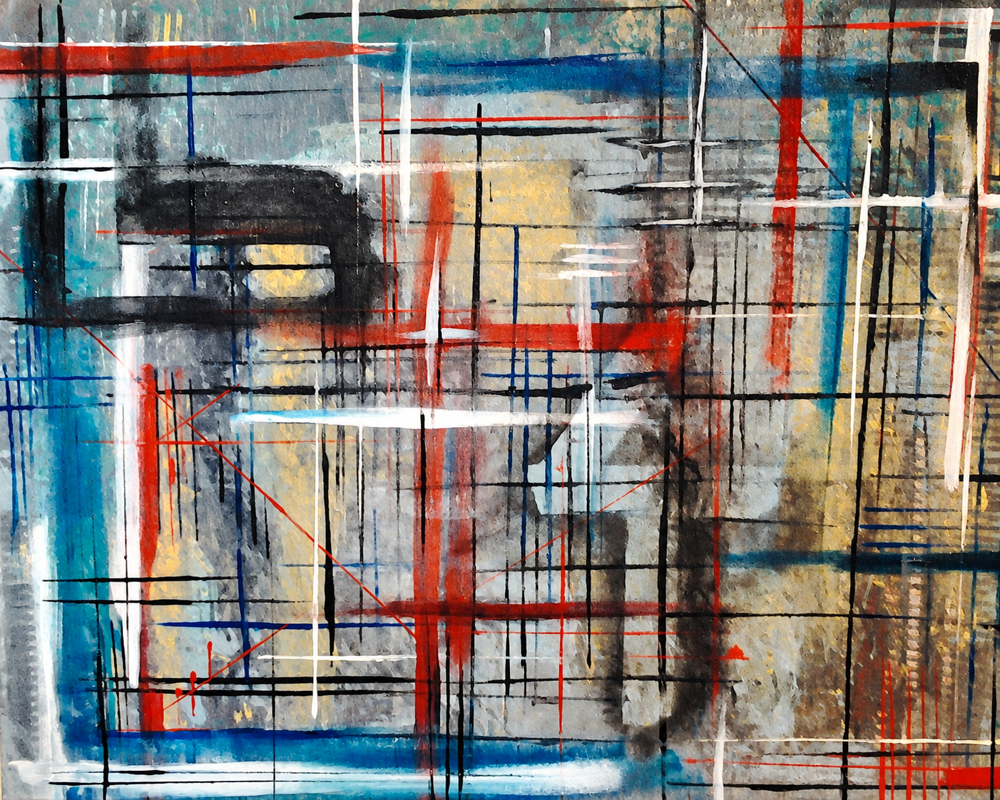
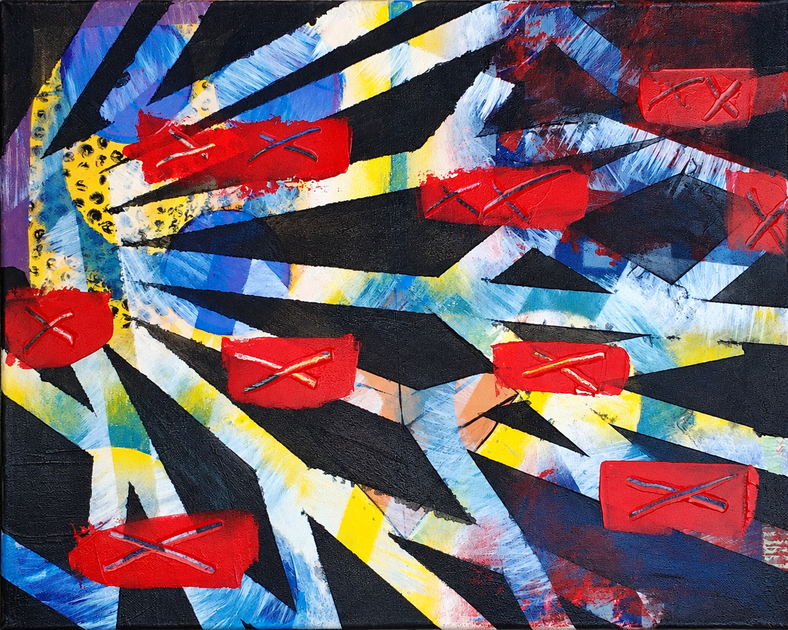

Joshua Baird / Creative Writing
Some stories
refuse a
straight line.
A place for the stories I write. Characters, worlds, and ideas that need a little more room to unfold.

The writing desk
Every story
opens a door.
Original writing, collected here as it is ready to be shared. Each story gets a direct link to read it.
THE STORY SHELF
0 stories
A space for what's next
The shelf is
ready.
This is where new stories will appear, with a link to each one when it's published.
The story list could not be loaded. Please try again later.

NOT ALL IDEASSTAY ON THE PAGE.
Beyond the first draft
Curiosity
doesn't stay
in the margins.
Some stories begin with a person. Some begin with a question. The interesting part is finding out where they go.
Explore the art